<meta charset="utf-8" />
<title>Programa Advogado Aprendiz</title>
<meta name="description" content="Curso 100% prático de Direito Tributário aplicado à execução fiscal, ministrado pela Dra. Bianca Cardoso Marques." />
<link rel="preconnect" href="https://fonts.googleapis.com" />
<link rel="preconnect" href="https://fonts.gstatic.com" crossorigin />
<link rel="stylesheet" href="https://fonts.googleapis.com/css2?family=Montserrat:wght@600;700;800&family=Mulish:ital,wght@0,400;0,500;0,600;0,700;0,800;1,400&family=Lora:ital,wght@0,400;0,500;1,400&display=swap" />

<style>
  /* ============ TOKENS ============ */
  :root {
    --ground: #eceef2;
    --surface: #ffffff;
    --surface-2: #f4f6f9;
    --paper: #fbfaf6;

    --ink: #20232c;
    --body: #3d414b;
    --muted: #6b7080;

    --navy: #172256;
    --navy-deep: #0b1030;
    --navy-mid: #2c3a92;
    --navy-bright: #3f52c4;

    --line: #d9dce4;
    --red: #d21f2b;
    --red-deep: #a5161f;
    --red-wash: #fbeceb;

    --on-navy: #f3f4fa;
    --on-navy-dim: #b7c0e4;

    --shadow-sm: 0 1px 2px rgba(11, 16, 48, .05);
    --shadow: 0 1px 2px rgba(11, 16, 48, .05), 0 14px 32px -14px rgba(11, 16, 48, .18);
    --shadow-lg: 0 2px 6px rgba(11, 16, 48, .06), 0 30px 60px -24px rgba(11, 16, 48, .30);

    --maxw: 1080px;
    --radius: 14px;
    --radius-sm: 9px;
  }

  @media (prefers-color-scheme: dark) {
    :root:not([data-theme="light"]) {
      --ground: #0a0e24;
      --surface: #121736;
      --surface-2: #0e1330;
      --paper: #f4f2ea;

      --ink: #f1f2f8;
      --body: #ccd1e3;
      --muted: #8a92b3;

      --navy: #1b2867;
      --navy-deep: #05081b;
      --navy-mid: #35459c;
      --navy-bright: #5566d8;

      --line: #262c4e;
      --red: #ff5a63;
      --red-deep: #ff8087;
      --red-wash: #2a1420;

      --on-navy: #eef0fb;
      --on-navy-dim: #aab2d8;

      --shadow-sm: 0 1px 2px rgba(0, 0, 0, .4);
      --shadow: 0 1px 2px rgba(0, 0, 0, .4), 0 16px 34px -16px rgba(0, 0, 0, .6);
      --shadow-lg: 0 2px 8px rgba(0, 0, 0, .5), 0 34px 60px -22px rgba(0, 0, 0, .7);
    }
  }

  :root[data-theme="dark"] {
    --ground: #0a0e24;
    --surface: #121736;
    --surface-2: #0e1330;
    --paper: #f4f2ea;

    --ink: #f1f2f8;
    --body: #ccd1e3;
    --muted: #8a92b3;

    --navy: #1b2867;
    --navy-deep: #05081b;
    --navy-mid: #35459c;
    --navy-bright: #5566d8;

    --line: #262c4e;
    --red: #ff5a63;
    --red-deep: #ff8087;
    --red-wash: #2a1420;

    --on-navy: #eef0fb;
    --on-navy-dim: #aab2d8;

    --shadow-sm: 0 1px 2px rgba(0, 0, 0, .4);
    --shadow: 0 1px 2px rgba(0, 0, 0, .4), 0 16px 34px -16px rgba(0, 0, 0, .6);
    --shadow-lg: 0 2px 8px rgba(0, 0, 0, .5), 0 34px 60px -22px rgba(0, 0, 0, .7);
  }

  /* ============ BASE ============ */
  *, *::before, *::after { box-sizing: border-box; }

  html { scroll-behavior: smooth; }
  @media (prefers-reduced-motion: reduce) { html { scroll-behavior: auto; } }

  body {
    margin: 0;
    background: var(--ground);
    color: var(--body);
    font-family: "Mulish", system-ui, -apple-system, "Segoe UI", Roboto, sans-serif;
    font-size: 1.0625rem;
    line-height: 1.62;
    -webkit-font-smoothing: antialiased;
    text-rendering: optimizeLegibility;
  }

  h1, h2, h3, h4 {
    font-family: "Montserrat", "Mulish", system-ui, sans-serif;
    color: var(--ink);
    line-height: 1.14;
    text-wrap: balance;
    margin: 0;
  }

  p { margin: 0; }
  strong { color: var(--ink); font-weight: 700; }
  /* Bold text sits on dark navy in these sections — keep it white for contrast */
  .hero strong,
  .band strong,
  .final strong,
  .site-foot strong { color: #fff; }
  /* …except inside light cards nested on those dark bands */
  .band .card strong { color: var(--ink); }
  a { color: inherit; }

  ::selection { background: var(--navy-bright); color: #fff; }

  :focus-visible {
    outline: 3px solid var(--navy-bright);
    outline-offset: 3px;
    border-radius: 3px;
  }

  /* ============ LAYOUT PRIMITIVES ============ */
  .wrap {
    width: 100%;
    max-width: var(--maxw);
    margin-inline: auto;
    padding-inline: clamp(1.15rem, 5vw, 2.5rem);
  }

  .section {
    padding-block: clamp(3.5rem, 9vw, 6.5rem);
    scroll-margin-top: 5rem;
  }

  .section--tight { padding-block: clamp(2.75rem, 6vw, 4rem); }

  .eyebrow {
    font-family: "Montserrat", sans-serif;
    font-weight: 700;
    font-size: .72rem;
    letter-spacing: .22em;
    text-transform: uppercase;
    color: var(--navy-bright);
    margin: 0 0 1rem;
    display: flex;
    align-items: center;
    gap: .7rem;
  }
  .eyebrow::before {
    content: "";
    width: 2rem;
    height: 2px;
    background: var(--red);
    display: inline-block;
  }

  .section-head { max-width: 46ch; margin-bottom: clamp(2rem, 5vw, 3rem); }
  .section-head h2 {
    font-size: clamp(1.6rem, 4.2vw, 2.4rem);
    font-weight: 800;
    letter-spacing: -.01em;
  }
  .section-head p { margin-top: 1rem; color: var(--body); }

  /* ============ HEADER ============ */
  .site {
    position: sticky;
    top: 0;
    z-index: 50;
    background: color-mix(in srgb, var(--navy-deep) 90%, transparent);
    backdrop-filter: blur(10px);
    border-bottom: 1px solid rgba(255, 255, 255, .08);
  }
  .site .wrap {
    display: flex;
    align-items: center;
    justify-content: space-between;
    gap: 1rem;
    padding-block: .7rem;
  }
  .brand {
    display: flex;
    align-items: center;
    text-decoration: none;
  }
  .brand img { height: 32px; width: auto; display: block; }
  .site .btn { padding: .6rem 1.1rem; font-size: .82rem; }
  @media (max-width: 560px) {
    .site .btn--ghost { display: none; }
  }

  /* ============ BUTTONS ============ */
  .btn {
    display: inline-flex;
    align-items: center;
    justify-content: center;
    gap: .55rem;
    font-family: "Montserrat", sans-serif;
    font-weight: 700;
    font-size: .95rem;
    letter-spacing: .01em;
    text-decoration: none;
    padding: 1rem 1.6rem;
    border-radius: 999px;
    border: 0;
    cursor: pointer;
    transition: transform .18s ease, box-shadow .18s ease, background .18s ease;
  }
  .btn--primary {
    background: var(--red);
    color: #fff;
    box-shadow: 0 10px 24px -8px color-mix(in srgb, var(--red) 60%, transparent);
  }
  .btn--primary:hover { background: var(--red-deep); transform: translateY(-2px); }
  .btn--navy {
    background: var(--navy);
    color: var(--on-navy);
  }
  .btn--navy:hover { transform: translateY(-2px); box-shadow: var(--shadow); }
  .btn--ghost {
    background: transparent;
    color: var(--on-navy);
    border: 1px solid rgba(255, 255, 255, .28);
  }
  .btn--ghost:hover { background: rgba(255, 255, 255, .1); }
  .btn--lg { padding: 1.15rem 2rem; font-size: 1.02rem; }
  @media (prefers-reduced-motion: reduce) {
    .btn:hover { transform: none; }
  }

  .cta-note {
    font-size: .82rem;
    color: var(--muted);
    margin-top: .8rem;
    display: flex;
    align-items: center;
    gap: .45rem;
    justify-content: center;
  }
  .cta-note svg { width: 15px; height: 15px; color: var(--navy-bright); flex: none; }

  /* ============ FACETS (brand geometric motif) ============ */
  .facets {
    position: absolute;
    inset: 0;
    overflow: hidden;
    pointer-events: none;
  }
  .facets svg { position: absolute; inset: 0; width: 100%; height: 100%; }

  /* ============ HERO ============ */
  .hero {
    position: relative;
    background: var(--navy-deep);
    color: var(--on-navy);
    overflow: hidden;
    isolation: isolate;
  }
  .hero .wrap {
    position: relative;
    z-index: 2;
    display: grid;
    gap: 2.5rem;
    padding-block: clamp(3rem, 8vw, 5.5rem);
  }
  @media (min-width: 900px) {
    .hero .wrap {
      grid-template-columns: 1.15fr .85fr;
      align-items: center;
      gap: 3.5rem;
    }
  }

  .pill {
    display: inline-flex;
    align-items: center;
    gap: .5rem;
    background: #fff;
    color: var(--navy);
    font-family: "Montserrat", sans-serif;
    font-weight: 700;
    font-size: .72rem;
    letter-spacing: .16em;
    text-transform: uppercase;
    padding: .45rem .95rem;
    border-radius: 999px;
  }
  .pill--dim {
    background: rgba(255, 255, 255, .1);
    color: var(--on-navy);
  }

  .hero h1 {
    color: #fff;
    font-weight: 800;
    font-size: clamp(2rem, 5.6vw, 3.35rem);
    letter-spacing: -.015em;
    margin: 1.4rem 0 1.1rem;
  }
  .hero h1 em {
    font-style: normal;
    color: var(--red);
    background: linear-gradient(transparent 62%, color-mix(in srgb, var(--red) 32%, transparent) 62%);
  }
  .hero .lead {
    font-size: clamp(1.02rem, 2vw, 1.16rem);
    color: var(--on-navy-dim);
    max-width: 52ch;
  }
  .hero .lead strong { color: #fff; }

  .hero-actions {
    display: flex;
    flex-wrap: wrap;
    gap: .9rem;
    margin-top: 1.9rem;
  }

  .instructor {
    display: flex;
    align-items: center;
    gap: .85rem;
    margin-top: 2.1rem;
    padding-top: 1.6rem;
    border-top: 1px solid rgba(255, 255, 255, .14);
  }
  .instructor .ini {
    width: 60px;
    height: 60px;
    border-radius: 999px;
    object-fit: cover;
    object-position: 50% 20%;
    border: 2px solid rgba(255, 255, 255, .3);
    flex: none;
  }
  .instructor p { font-size: .9rem; color: var(--on-navy-dim); line-height: 1.45; }
  .instructor b { color: #fff; font-weight: 700; }
  .instructor a {
    color: #fff;
    text-decoration: none;
    border-bottom: 1px solid rgba(255, 255, 255, .35);
    white-space: nowrap;
  }
  .instructor a:hover { border-bottom-color: #fff; }

  /* hero timeline card */
  .tl-card {
    position: relative;
    background: rgba(255, 255, 255, .04);
    border: 1px solid rgba(255, 255, 255, .12);
    border-radius: var(--radius);
    padding: 1.6rem 1.5rem 1.75rem;
    backdrop-filter: blur(4px);
  }
  .tl-card h3 {
    color: #fff;
    font-size: .95rem;
    font-weight: 700;
    letter-spacing: .02em;
    margin-bottom: 1.35rem;
    display: flex;
    align-items: center;
    gap: .6rem;
  }
  .tl-card h3 svg { width: 18px; height: 18px; color: var(--navy-bright); }

  .timeline {
    display: flex;
    flex-direction: column;
    gap: .1rem;
  }
  .tl-step {
    display: grid;
    grid-template-columns: auto 1fr;
    gap: .9rem;
    align-items: start;
  }
  .tl-rail {
    display: flex;
    flex-direction: column;
    align-items: center;
    align-self: stretch;
  }
  .tl-dot {
    width: 13px;
    height: 13px;
    border-radius: 999px;
    background: var(--navy-bright);
    border: 2px solid var(--navy-deep);
    box-shadow: 0 0 0 3px rgba(63, 82, 196, .25);
    flex: none;
    margin-top: .3rem;
  }
  .tl-step:last-child .tl-dot { background: var(--red); box-shadow: 0 0 0 3px color-mix(in srgb, var(--red) 30%, transparent); }
  .tl-line {
    width: 2px;
    flex: 1;
    background: rgba(255, 255, 255, .16);
    min-height: 20px;
  }
  .tl-step:last-child .tl-line { display: none; }
  .tl-body { padding-bottom: 1rem; }
  .tl-step:last-child .tl-body { padding-bottom: 0; }
  .tl-body b {
    display: block;
    color: #fff;
    font-family: "Montserrat", sans-serif;
    font-size: .74rem;
    letter-spacing: .12em;
    text-transform: uppercase;
  }
  .tl-body span { font-size: .86rem; color: var(--on-navy-dim); }
  .tl-step:last-child .tl-body b { color: var(--red); }

  /* ============ GENERIC SURFACES ============ */
  .card {
    background: var(--surface);
    border: 1px solid var(--line);
    border-radius: var(--radius);
    box-shadow: var(--shadow-sm);
  }

  .arrows { list-style: none; margin: 0; padding: 0; display: flex; flex-direction: column; gap: .85rem; }
  .arrows li { display: grid; grid-template-columns: 22px 1fr; gap: .7rem; align-items: start; }
  .arrows li > svg {
    width: 20px; height: 20px;
    color: var(--navy-bright);
    margin-top: .18rem;
    flex: none;
  }
  .arrows li strong { color: var(--ink); }

  .checks { list-style: none; margin: 0; padding: 0; display: flex; flex-direction: column; gap: .1rem; }
  .checks li {
    display: grid;
    grid-template-columns: 24px 1fr;
    gap: .8rem;
    align-items: start;
    padding: .85rem 0;
    border-bottom: 1px dashed var(--line);
  }
  .checks li:last-child { border-bottom: 0; }
  .checks li > svg { width: 21px; height: 21px; color: var(--navy); margin-top: .12rem; flex: none; }

  /* ============ PAIN SECTION ============ */
  .persona-grid {
    display: grid;
    gap: 1.25rem;
    margin-top: 1.5rem;
  }
  @media (min-width: 760px) { .persona-grid { grid-template-columns: 1fr 1fr; } }

  .persona {
    padding: 1.6rem 1.5rem;
    border-radius: var(--radius);
    background: var(--surface);
    border: 1px solid var(--line);
    box-shadow: var(--shadow-sm);
  }
  .persona h3 {
    font-size: 1.02rem;
    font-weight: 700;
    color: var(--navy-bright);
    margin-bottom: .7rem;
    display: flex;
    gap: .55rem;
    align-items: center;
  }
  .persona h3 svg { width: 20px; height: 20px; color: var(--navy-bright); flex: none; }
  .persona p + p { margin-top: .7rem; }
  .persona .q {
    font-family: "Lora", Georgia, serif;
    font-style: italic;
    color: var(--ink);
  }

  .agitate {
    margin-top: 1.5rem;
    padding: 1.5rem 1.6rem;
    border-left: 4px solid var(--red);
    background: var(--red-wash);
    border-radius: 0 var(--radius-sm) var(--radius-sm) 0;
  }
  .agitate p + p { margin-top: .8rem; }
  .chain {
    display: inline-flex;
    flex-wrap: wrap;
    gap: .35rem;
    font-family: "Montserrat", sans-serif;
    font-weight: 700;
    font-size: .72rem;
    letter-spacing: .06em;
    margin-top: .3rem;
  }
  .chain span {
    background: var(--navy);
    color: var(--on-navy);
    padding: .25rem .5rem;
    border-radius: 5px;
  }
  .chain span:last-child { background: var(--red); color: #fff; }

  /* ============ SOLUTION / METHOD ============ */
  .band {
    position: relative;
    background: var(--navy-deep);
    color: var(--on-navy);
    overflow: hidden;
    isolation: isolate;
  }
  .band .wrap { position: relative; z-index: 2; }
  .band h2 { color: #fff; }
  .band .section-head p { color: var(--on-navy-dim); }
  .band .eyebrow { color: #fff; }
  /* light cards nested on the dark band use normal body text, not on-navy */
  .band .card { color: var(--body); }

  .method-split { display: grid; gap: 1.75rem; align-items: center; }
  .method-split .section-head { margin-bottom: 0; max-width: 40ch; }
  @media (min-width: 860px) {
    .method-split { grid-template-columns: 1fr 1fr; gap: 3rem; }
  }

  .flow {
    background: rgba(255, 255, 255, .04);
    border: 1px solid rgba(255, 255, 255, .12);
    border-radius: var(--radius);
    padding: 1.5rem;
  }
  .flow h3 { color: #fff; font-size: .95rem; margin-bottom: 1.1rem; }
  .flow-steps { display: flex; flex-wrap: wrap; gap: .5rem; }
  .flow-steps .node {
    font-family: "Montserrat", sans-serif;
    font-weight: 700;
    font-size: .72rem;
    letter-spacing: .05em;
    padding: .4rem .65rem;
    border-radius: 6px;
    background: rgba(255, 255, 255, .08);
    color: var(--on-navy);
    border: 1px solid rgba(255, 255, 255, .12);
  }
  .flow-steps .node.end { background: var(--red); border-color: var(--red); color: #fff; }
  .flow p { margin-top: 1.1rem; font-size: .92rem; color: var(--on-navy-dim); }

  /* ============ MODULES ============ */
  .modules { display: flex; flex-direction: column; gap: 1.1rem; }
  .module {
    display: grid;
    gap: 1rem 1.4rem;
    padding: 1.6rem 1.6rem;
    background: var(--surface);
    border: 1px solid var(--line);
    border-radius: var(--radius);
    box-shadow: var(--shadow-sm);
    transition: box-shadow .2s ease, transform .2s ease, border-color .2s ease;
  }
  @media (min-width: 820px) {
    .module { grid-template-columns: 210px 1fr; align-items: start; }
  }
  .module:hover { box-shadow: var(--shadow); border-color: color-mix(in srgb, var(--navy-bright) 40%, var(--line)); }
  @media (prefers-reduced-motion: reduce) { .module:hover { transform: none; } }

  .module-side { display: flex; flex-direction: column; gap: .9rem; }
  .module-num {
    font-family: "Montserrat", sans-serif;
    font-weight: 800;
    font-size: .7rem;
    letter-spacing: .14em;
    text-transform: uppercase;
    color: var(--navy);
    background: color-mix(in srgb, var(--navy-bright) 12%, transparent);
    border: 1px solid color-mix(in srgb, var(--navy-bright) 24%, transparent);
    padding: .35rem .7rem;
    border-radius: 999px;
    align-self: flex-start;
  }
  .module h3 {
    font-size: 1.06rem;
    font-weight: 700;
    letter-spacing: -.005em;
  }
  .module-body { color: var(--body); font-size: .98rem; }

  .stage-rail { display: flex; align-items: center; gap: 5px; }
  .stage-rail .s {
    width: 100%;
    height: 6px;
    border-radius: 3px;
    background: var(--line);
    flex: 1;
  }
  .stage-rail .s.on { background: var(--navy-bright); }
  .stage-rail .s.end { background: var(--red); }
  .stage-cap {
    font-family: "Montserrat", sans-serif;
    font-size: .58rem;
    letter-spacing: .12em;
    color: var(--muted);
    text-transform: uppercase;
    display: flex;
    justify-content: space-between;
    margin-top: .35rem;
  }

  /* ============ CALLOUTS ============ */
  .callout {
    border-radius: var(--radius-sm);
    padding: 1.15rem 1.25rem;
    margin-top: 1.15rem;
    background: var(--surface-2);
    border: 1px solid var(--line);
    border-left: 4px solid var(--navy-mid);
  }
  .callout.atencao { border-left-color: var(--red); background: var(--red-wash); }
  .callout h4 {
    font-family: "Montserrat", sans-serif;
    font-size: .74rem;
    letter-spacing: .12em;
    text-transform: uppercase;
    color: var(--navy-bright);
    margin-bottom: .45rem;
  }
  .callout.atencao h4 { color: var(--red-deep); }
  .callout p { font-size: .92rem; }

  /* ============ BENEFITS ============ */
  .benefit-cols { display: grid; gap: 1.5rem; }
  @media (min-width: 820px) { .benefit-cols { grid-template-columns: 1fr 1fr; } }
  .benefit-cols > div {
    background: var(--surface);
    border: 1px solid var(--line);
    border-radius: var(--radius);
    padding: 1.7rem 1.6rem;
    box-shadow: var(--shadow-sm);
  }
  .benefit-cols h3 {
    font-size: 1rem;
    font-weight: 800;
    color: var(--navy-bright);
    margin-bottom: 1.1rem;
    padding-bottom: .8rem;
    border-bottom: 2px solid var(--line);
  }

  /* ============ TESTIMONIALS ============ */
  .quotes { display: grid; gap: 1.15rem; }
  @media (min-width: 760px) { .quotes { grid-template-columns: repeat(3, 1fr); } }
  .quote {
    background: var(--surface);
    border: 1px solid var(--line);
    border-radius: var(--radius);
    padding: 1.4rem 1.4rem 1.5rem;
    box-shadow: var(--shadow-sm);
    display: flex;
    flex-direction: column;
    gap: 1rem;
  }
  .quote .mark {
    font-family: "Lora", Georgia, serif;
    font-size: 2.4rem;
    line-height: .5;
    color: var(--navy-bright);
    height: 1rem;
  }
  .quote p {
    font-family: "Lora", Georgia, serif;
    font-size: .96rem;
    line-height: 1.58;
    color: var(--ink);
  }
  .quote cite {
    font-style: normal;
    font-family: "Montserrat", sans-serif;
    font-weight: 700;
    font-size: .78rem;
    letter-spacing: .04em;
    color: var(--navy-bright);
    margin-top: auto;
  }
  .disclaimer {
    margin-top: 1.5rem;
    font-size: .8rem;
    color: var(--muted);
    display: flex;
    gap: .5rem;
    align-items: flex-start;
  }
  .disclaimer svg { width: 16px; height: 16px; flex: none; margin-top: .15rem; color: var(--navy-bright); }

  /* ============ OFFER ============ */
  .offer-grid { display: grid; gap: 1.5rem; }
  @media (min-width: 880px) { .offer-grid { grid-template-columns: 1.05fr .95fr; align-items: stretch; } }

  .offer-list { padding: 1.8rem 1.7rem; }
  .offer-list h3 { font-size: 1rem; font-weight: 800; margin-bottom: 1rem; color: var(--ink); }

  .price-card {
    position: relative;
    overflow: hidden;
    isolation: isolate;
    background: var(--navy-deep);
    color: var(--on-navy);
    border-radius: var(--radius);
    padding: 2rem 1.8rem;
    display: flex;
    flex-direction: column;
    gap: .3rem;
    box-shadow: var(--shadow-lg);
  }
  .price-card .facets { z-index: -1; opacity: .55; }
  .price-card .k {
    font-family: "Montserrat", sans-serif;
    font-weight: 700;
    font-size: .72rem;
    letter-spacing: .18em;
    text-transform: uppercase;
    color: var(--on-navy-dim);
  }
  .price-card .old {
    text-decoration: line-through;
    color: var(--on-navy-dim);
    font-size: 1rem;
    margin-top: .6rem;
  }
  .price-card .now {
    font-family: "Montserrat", sans-serif;
    font-weight: 800;
    font-size: clamp(2.6rem, 7vw, 3.4rem);
    color: #fff;
    line-height: 1;
    font-variant-numeric: tabular-nums;
  }
  .price-card .now small { font-size: 1.1rem; font-weight: 700; color: var(--on-navy-dim); }
  .price-card .split { color: var(--on-navy-dim); font-size: .95rem; margin-bottom: 1.3rem; font-variant-numeric: tabular-nums; }
  .price-card .btn { width: 100%; }
  .price-card .fine {
    margin-top: 1rem;
    font-size: .78rem;
    color: var(--on-navy-dim);
    display: flex;
    gap: .5rem;
    align-items: center;
    justify-content: center;
  }
  .price-card .fine svg { width: 15px; height: 15px; flex: none; }

  /* ============ GUARANTEE ============ */
  .guarantee {
    display: grid;
    gap: 1.4rem;
    align-items: center;
    background: var(--surface);
    border: 1px solid var(--line);
    border-radius: var(--radius);
    padding: clamp(1.6rem, 4vw, 2.4rem);
    box-shadow: var(--shadow-sm);
  }
  @media (min-width: 720px) { .guarantee { grid-template-columns: 88px 1fr; } }
  .seal {
    width: 88px;
    height: 88px;
    border-radius: 999px;
    display: grid;
    place-items: center;
    background: color-mix(in srgb, var(--navy-bright) 12%, transparent);
    border: 2px solid var(--navy-bright);
    color: var(--navy-bright);
    flex: none;
  }
  .seal svg { width: 42px; height: 42px; }
  .guarantee h3 { font-size: 1.15rem; font-weight: 800; margin-bottom: .6rem; }
  .guarantee p + p { margin-top: .6rem; font-size: .95rem; }

  /* ============ FAQ ============ */
  .faq { display: flex; flex-direction: column; gap: .8rem; }
  .faq details {
    background: var(--surface);
    border: 1px solid var(--line);
    border-radius: var(--radius-sm);
    padding: .3rem 1.3rem;
    box-shadow: var(--shadow-sm);
  }
  .faq summary {
    list-style: none;
    cursor: pointer;
    padding: 1.05rem 2rem 1.05rem 0;
    position: relative;
    font-family: "Montserrat", sans-serif;
    font-weight: 700;
    font-size: 1rem;
    color: var(--ink);
  }
  .faq summary::-webkit-details-marker { display: none; }
  .faq summary::after {
    content: "";
    position: absolute;
    right: .1rem;
    top: 50%;
    width: 11px;
    height: 11px;
    border-right: 2px solid var(--navy-bright);
    border-bottom: 2px solid var(--navy-bright);
    transform: translateY(-70%) rotate(45deg);
    transition: transform .2s ease;
  }
  .faq details[open] summary::after { transform: translateY(-30%) rotate(-135deg); }
  .faq details > p { padding: 0 0 1.15rem; font-size: .96rem; }
  .faq details[open] summary { color: var(--navy-bright); }

  /* ============ A PROFESSORA / CV ============ */
  .about-grid { display: grid; gap: clamp(1.75rem, 5vw, 3.25rem); }
  @media (min-width: 900px) { .about-grid { grid-template-columns: 336px 1fr; align-items: start; } }

  @media (min-width: 900px) { .about-portrait { position: sticky; top: 5.5rem; } }
  .about-photo { position: relative; }
  .about-photo img {
    position: relative;
    z-index: 1;
    width: 100%;
    display: block;
    border-radius: 16px;
    box-shadow: var(--shadow-lg);
  }
  .about-photo::before {
    content: "";
    position: absolute;
    left: 16px;
    right: -16px;
    top: -16px;
    bottom: 18px;
    background: linear-gradient(150deg, var(--navy), var(--navy-mid));
    border-radius: 16px;
    clip-path: polygon(0 0, 100% 0, 100% 82%, 78% 100%, 0 100%);
    z-index: 0;
  }

  .about-name {
    font-family: "Montserrat", sans-serif;
    font-weight: 800;
    font-size: 1.15rem;
    color: var(--ink);
    margin: 1.1rem 0 .2rem;
  }
  .about-role { font-size: .88rem; color: var(--muted); }

  .about-intro { font-size: 1.05rem; }
  .about-intro strong { color: var(--ink); }

  .cv { margin-top: 2rem; }
  .cv + .cv { margin-top: 2.4rem; }
  .cv-label {
    font-family: "Montserrat", sans-serif;
    font-weight: 700;
    font-size: .72rem;
    letter-spacing: .2em;
    text-transform: uppercase;
    color: var(--navy-bright);
    margin: 0 0 1.3rem;
    display: flex;
    align-items: center;
    gap: .7rem;
  }
  .cv-label::before { content: ""; width: 1.6rem; height: 2px; background: var(--red); display: inline-block; }

  .cv-list { list-style: none; margin: 0; padding: 0; border-left: 2px solid var(--line); }
  .cv-item { position: relative; padding: 0 0 1.6rem 1.6rem; }
  .cv-item:last-child { padding-bottom: 0; }
  .cv-item::before {
    content: "";
    position: absolute;
    left: -7px;
    top: .3rem;
    width: 12px;
    height: 12px;
    border-radius: 999px;
    background: var(--navy-bright);
    box-shadow: 0 0 0 4px var(--ground);
  }
  .cv-item:first-child::before { background: var(--red); }

  .cv-topline { display: flex; flex-wrap: wrap; align-items: baseline; gap: .45rem .7rem; }
  .cv-mono {
    font-family: "Montserrat", sans-serif;
    font-weight: 700;
    font-size: .6rem;
    letter-spacing: .1em;
    text-transform: uppercase;
    color: var(--on-navy);
    background: var(--navy);
    padding: .28rem .5rem;
    border-radius: 5px;
    flex: none;
    transform: translateY(-1px);
  }
  .cv-head { font-family: "Montserrat", sans-serif; font-weight: 700; font-size: 1rem; color: var(--ink); }
  .cv-meta {
    font-family: "Montserrat", sans-serif;
    font-size: .74rem;
    letter-spacing: .03em;
    color: var(--muted);
    font-variant-numeric: tabular-nums;
    margin: .35rem 0 0;
  }
  .cv-item > p:last-child { font-size: .95rem; margin-top: .55rem; }

  /* ============ VÍDEO ============ */
  .video-section .wrap {
    display: flex;
    flex-direction: column;
    align-items: center;
    text-align: center;
    gap: clamp(1.5rem, 4vw, 2.25rem);
  }
  .video-section .section-head { margin-bottom: 0; max-width: 44ch; }
  .video-section .eyebrow { justify-content: center; margin-bottom: .6rem; }
  .video-section .section-head h2 {
    font-size: clamp(1.15rem, 2.4vw, 1.4rem);
    font-weight: 700;
    letter-spacing: 0;
  }
  .video {
    position: relative;
    width: 100%;
    max-width: 820px;
    aspect-ratio: 16 / 9;
    border-radius: var(--radius);
    overflow: hidden;
    border: 1px solid var(--line);
    box-shadow: var(--shadow-lg);
    background: var(--navy-deep);
  }
  .video iframe { position: absolute; inset: 0; width: 100%; height: 100%; border: 0; }

  /* ============ FINAL CTA ============ */
  .final {
    position: relative;
    background: var(--navy-deep);
    color: var(--on-navy);
    overflow: hidden;
    isolation: isolate;
    text-align: center;
  }
  .final .wrap { position: relative; z-index: 2; display: flex; flex-direction: column; align-items: center; gap: 1.3rem; }
  .final .eyebrow { color: #fff; }
  .final h2 { color: #fff; font-size: clamp(1.7rem, 4.6vw, 2.6rem); font-weight: 800; max-width: 20ch; }
  .final p { color: var(--on-navy-dim); max-width: 46ch; }

  /* ============ FOOTER ============ */
  footer.site-foot {
    background: var(--navy-deep);
    color: var(--on-navy-dim);
    border-top: 1px solid rgba(255, 255, 255, .1);
  }
  footer.site-foot .wrap {
    padding-block: 2.5rem;
    display: flex;
    flex-direction: column;
    gap: 1rem;
  }
  footer.site-foot .brand { margin-bottom: .3rem; }
  footer.site-foot p { font-size: .8rem; line-height: 1.55; }
  footer.site-foot .legal { color: var(--on-navy-dim); opacity: .8; }

  /* ============ REVEAL ANIMATION ============ */
  .reveal {
    opacity: 0;
    transform: translateY(18px);
    transition: opacity .6s ease, transform .6s ease;
  }
  .reveal.in { opacity: 1; transform: none; }
  @media (prefers-reduced-motion: reduce) {
    .reveal { opacity: 1; transform: none; transition: none; }
  }
</style>
<noscript><style>.reveal { opacity: 1; transform: none; }</style></noscript>

<header class="site">
  <div class="wrap">
    <a class="brand" href="#topo" aria-label="Programa Advogado Aprendiz — início">
      
    </a>
    <a class="btn btn--primary" href="https://pay.kiwify.com.br/eNDYzcG">Garantir minha vaga</a>
  </div>
</header>

<main id="topo">

  <!-- ===================== HERO ===================== -->
  <section class="hero">
    <div class="facets" aria-hidden="true">
      <svg viewBox="0 0 100 100" preserveAspectRatio="none">
        <polygon points="55,0 100,0 100,100 40,100" fill="#172256"/>
        <polygon points="66,0 100,0 100,66 78,100 44,100" fill="#2c3a92" opacity="0.55"/>
        <polygon points="80,0 100,0 100,44" fill="#3f52c4" opacity="0.4"/>
        <polygon points="50,100 100,42 100,100" fill="#0b1030" opacity="0.7"/>
        <polygon points="62,0 92,0 70,38" fill="#0b1030" opacity="0.55"/>
      </svg>
    </div>
    <div class="wrap">
      <div>
        <span class="pill">Programa Advogado Aprendiz</span>
        <h1>Pare de temer a <em>execução fiscal</em>: domine a prática tributária do fato gerador à defesa em juízo</h1>
        <p class="lead">
          O curso que fecha a ponte entre o que você viu na faculdade e o que se exige no
          dia a dia do escritório: ler uma <strong>CDA</strong> sem travar, reconstruir a linha do tempo do
          crédito, calcular prazos com precisão cirúrgica e montar sua primeira
          <strong>Exceção de Pré-Executividade</strong> com segurança técnica real &mdash; não com modelo
          genérico de internet.
        </p>
        <div class="hero-actions">
          <a class="btn btn--primary btn--lg" href="https://pay.kiwify.com.br/eNDYzcG">Quero dominar a prática tributária</a>
          <a class="btn btn--ghost btn--lg" href="#curso">Ver o que você aprende</a>
        </div>
        <p class="cta-note" style="justify-content:flex-start;color:var(--on-navy-dim)">
          <svg viewBox="0 0 24 24" fill="none"><path d="M13 3L4 14h7l-1 7 9-11h-7l1-7z" fill="currentColor"/></svg>
          Acesso imediato após a inscrição
        </p>

        <div class="instructor">
          
          <p>Curso ministrado por <b>Dra. Bianca Cardoso Marques</b><br />
            Advogada &middot; Especialista em Direito Tributário e Empresarial &middot;
            <a href="#professora">conheça a trajetória</a></p>
        </div>
      </div>

      <div class="tl-card reveal">
        <h3>
          <svg viewBox="0 0 24 24" fill="none"><path d="M12 8v5l3 3" stroke="currentColor" stroke-width="2" stroke-linecap="round"/><circle cx="12" cy="12" r="9" stroke="currentColor" stroke-width="2"/></svg>
          A linha do tempo tributária
        </h3>
        <div class="timeline">
          <div class="tl-step"><div class="tl-rail"><span class="tl-dot"></span><span class="tl-line"></span></div><div class="tl-body"><b>HIT</b><span>Hipótese de incidência</span></div></div>
          <div class="tl-step"><div class="tl-rail"><span class="tl-dot"></span><span class="tl-line"></span></div><div class="tl-body"><b>FG</b><span>Fato gerador</span></div></div>
          <div class="tl-step"><div class="tl-rail"><span class="tl-dot"></span><span class="tl-line"></span></div><div class="tl-body"><b>OT</b><span>Obrigação tributária</span></div></div>
          <div class="tl-step"><div class="tl-rail"><span class="tl-dot"></span><span class="tl-line"></span></div><div class="tl-body"><b>Lçto</b><span>Lançamento</span></div></div>
          <div class="tl-step"><div class="tl-rail"><span class="tl-dot"></span><span class="tl-line"></span></div><div class="tl-body"><b>CT</b><span>Crédito tributário</span></div></div>
          <div class="tl-step"><div class="tl-rail"><span class="tl-dot"></span><span class="tl-line"></span></div><div class="tl-body"><b>DA</b><span>Dívida ativa</span></div></div>
          <div class="tl-step"><div class="tl-rail"><span class="tl-dot"></span></div><div class="tl-body"><b>EF</b><span>Execução fiscal &mdash; a &ldquo;ponta final&rdquo;</span></div></div>
        </div>
      </div>
    </div>
  </section>

  <!-- ===================== VÍDEO ===================== -->
  <section class="section section--tight video-section" id="video">
    <div class="wrap">
      <div class="section-head reveal">
        <p class="eyebrow">Assista</p>
        <h2>O Programa Advogado Aprendiz em poucos minutos</h2>
      </div>
      <div class="video reveal">
        <iframe
          src="https://www.youtube-nocookie.com/embed/t-GsafeCTdk?rel=0"
          title="Programa Advogado Aprendiz — apresentação da Dra. Bianca Cardoso Marques"
          loading="lazy"
          referrerpolicy="strict-origin-when-cross-origin"
          allow="encrypted-media; picture-in-picture; clipboard-write; web-share; fullscreen"
          allowfullscreen></iframe>
      </div>
    </div>
  </section>

  <!-- ===================== A DOR ===================== -->
  <section class="section" id="dor">
    <div class="wrap">
      <div class="section-head reveal">
        <p class="eyebrow">O ponto de partida</p>
        <h2>Você estudou tributário nos livros. Mas uma execução fiscal de verdade na mesa é outra história.</h2>
        <p>Sabe o que é fato gerador, sabe a diferença entre decadência e prescrição &mdash; no papel.
          Aí chega uma CDA de 15 páginas, um cliente esperando resposta, e a insegurança aparece.</p>
      </div>

      <div class="persona-grid reveal">
        <div class="persona">
          <h3>
            <svg viewBox="0 0 24 24" fill="none"><path d="M4 7l8-4 8 4-8 4-8-4z" stroke="currentColor" stroke-width="2" stroke-linejoin="round"/><path d="M8 9.5V14c0 1.7 1.8 3 4 3s4-1.3 4-3V9.5M20 8v5" stroke="currentColor" stroke-width="2" stroke-linecap="round"/></svg>
            Se você está terminando a faculdade
          </h3>
          <p>O medo é sutil, mas constante: <span class="q">&ldquo;Será que eu vou saber advogar de verdade?&rdquo;</span>
            A grade te deu a teoria; ninguém te ensinou a reconstruir a linha do tempo de um crédito
            tributário, nem a identificar, numa petição inicial, se o Fisco errou.</p>
        </div>
        <div class="persona">
          <h3>
            <svg viewBox="0 0 24 24" fill="none"><path d="M6 21V9l6-4 6 4v12" stroke="currentColor" stroke-width="2" stroke-linejoin="round"/><path d="M3 21h18M10 21v-4h4v4" stroke="currentColor" stroke-width="2" stroke-linecap="round"/></svg>
            Se você já tem a OAB na mão
          </h3>
          <p>O medo mudou de forma: <span class="q">&ldquo;E se eu aceitar um caso tributário e entregar uma peça
            genérica que não convence nem o juiz, nem os Procuradores?&rdquo;</span>
            Sem clientes fixos, cada oportunidade pesa &mdash; e cada erro técnico custa caro para quem confiou em você.</p>
        </div>
      </div>

      <div class="agitate reveal">
        <p>Essa insegurança não desaparece com o tempo. Ela se agrava a cada caso recusado por falta de
          preparo, a cada prazo calculado &ldquo;no chute&rdquo;, a cada peça entregue sabendo, no fundo, que
          poderia ser mais sólida.</p>
        <p><strong>O problema não é falta de estudo &mdash; é falta de método.</strong> A execução fiscal é a ponta
          final de uma história que começa muito antes. Sem enxergar a linha do tempo completa, qualquer
          defesa vira tentativa e erro:</p>
        <span class="chain">
          <span>HIT</span><span>FG</span><span>OT</span><span>LÇTO</span><span>CT</span><span>DA</span><span>EF</span>
        </span>
      </div>
    </div>
  </section>

  <!-- ===================== A PROFESSORA ===================== -->
  <section class="section" id="professora">
    <div class="wrap">
      <div class="section-head reveal">
        <p class="eyebrow">A professora</p>
        <h2>Quem desenvolveu o método &mdash; e por que ele funciona</h2>
        <p>O Advogado Aprendiz não nasceu de teoria de manual. Nasceu de quem já esteve dos
          dois lados da execução fiscal.</p>
      </div>

      <div class="about-grid reveal">
        <div class="about-portrait">
          <div class="about-photo">
            
          </div>
          <p class="about-name">Dra. Bianca Cardoso Marques</p>
          <p class="about-role">Advogada &middot; Especialista em Direito Tributário e Empresarial</p>
        </div>

        <div>
          <p class="about-intro">
            Da <strong>Procuradoria da Fazenda Nacional</strong>, onde acompanhou a cobrança pelo
            lado de quem executa, ao <strong>Transfer Pricing da EY</strong> &mdash; uma das quatro
            maiores consultorias do mundo &mdash;, até a sociedade no próprio escritório.
            <strong>Desde 2009 no Direito Tributário</strong>, e é essa vivência, não um resumo de
            doutrina, que está destilada em cada aula.
          </p>

          <div class="cv">
            <p class="cv-label">Formação</p>
            <ul class="cv-list">
              <li class="cv-item">
                <div class="cv-topline">
                  <span class="cv-mono">EBRADI</span>
                  <span class="cv-head">Pós-Graduação em Direito Tributário</span>
                </div>
                <p class="cv-meta">Escola Brasileira de Direito &middot; 2020</p>
                <p>Especialização dedicada exclusivamente à matéria: CTN, legislação esparsa,
                  contencioso administrativo e judicial, jurisprudência dos tribunais superiores.
                  O aprofundamento que separa quem &ldquo;viu tributário na faculdade&rdquo; de quem atua
                  na área todos os dias.</p>
              </li>
              <li class="cv-item">
                <div class="cv-topline">
                  <span class="cv-mono">Estácio</span>
                  <span class="cv-head">LL.M. &mdash; Master of Laws em Direito Público</span>
                </div>
                <p class="cv-meta">Estácio &middot; 2015</p>
                <p>Pós-graduação no ramo que rege a relação entre o Estado e o particular &mdash; o
                  guarda-chuva onde mora o Direito Tributário: competência para tributar, limites ao
                  poder de fiscalizar e o processo administrativo que antecede a execução fiscal.</p>
              </li>
              <li class="cv-item">
                <div class="cv-topline">
                  <span class="cv-mono">UESB</span>
                  <span class="cv-head">Bacharel em Direito</span>
                </div>
                <p class="cv-meta">Universidade Estadual do Sudoeste da Bahia &middot; 2012</p>
                <p>Graduação em universidade pública. A base &mdash; teoria geral do direito, processo
                  civil, constitucional &mdash; que sustenta qualquer leitura técnica de um processo.</p>
              </li>
            </ul>
          </div>

          <div class="cv">
            <p class="cv-label">Trajetória profissional</p>
            <ul class="cv-list">
              <li class="cv-item">
                <div class="cv-topline">
                  <span class="cv-mono">M&amp;A</span>
                  <span class="cv-head">Sócia &mdash; Marques &amp; Associados</span>
                </div>
                <p class="cv-meta">Advocacia Tributária e Empresarial &middot; Brumado/BA &middot; 2018 &ndash; atual</p>
                <p>Sócia do próprio escritório, com atuação concentrada em Direito Tributário e
                  Empresarial. É a prática de hoje &mdash; os casos reais de execução fiscal que
                  alimentam cada aula com situação concreta, não com hipótese de manual.</p>
              </li>
              <li class="cv-item">
                <div class="cv-topline">
                  <span class="cv-mono">EY</span>
                  <span class="cv-head">ITS &mdash; Transfer Pricing</span>
                </div>
                <p class="cv-meta">Ernst &amp; Young &middot; São Paulo (unidade JK) &middot; 2015 &ndash; 2017</p>
                <p>Uma das &ldquo;Big Four&rdquo; globais de auditoria e consultoria. A área de International
                  Tax Services / Transfer Pricing analisa, para fins fiscais, operações entre empresas
                  do mesmo grupo em países diferentes &mdash; trabalho tributário de altíssima densidade
                  técnica: método, documentação, enquadramento normativo e defesa de posição perante
                  o Fisco. É o rigor de raciocínio que estrutura o método do curso.</p>
              </li>
              <li class="cv-item">
                <div class="cv-topline">
                  <span class="cv-mono">VBA</span>
                  <span class="cv-head">Advogada &mdash; Vaz Barbosa e Associados</span>
                </div>
                <p class="cv-meta">2012 &ndash; 2014</p>
                <p>Primeiros anos na advocacia privada, já em contencioso &mdash; a virada de lado da
                  mesa: de quem acompanhava a cobrança para quem constrói a defesa do contribuinte.</p>
              </li>
              <li class="cv-item">
                <div class="cv-topline">
                  <span class="cv-mono">PGFN</span>
                  <span class="cv-head">Estagiária &mdash; Procuradoria da Fazenda Nacional</span>
                </div>
                <p class="cv-meta">2009 &ndash; 2011</p>
                <p>A PGFN inscreve os débitos em Dívida Ativa da União e ajuíza as execuções fiscais
                  federais. Foi ali, do lado de quem cobra, que ela viu como a CDA é montada, como o
                  Fisco decide executar e onde os próprios Procuradores enxergam fragilidade &mdash; a
                  perspectiva &ldquo;de dentro&rdquo; que ela ensina a explorar na defesa.</p>
              </li>
            </ul>
          </div>
        </div>
      </div>
    </div>
  </section>

  <!-- ===================== O CURSO / MÉTODO ===================== -->
  <section class="section band" id="curso">
    <div class="facets" aria-hidden="true">
      <svg viewBox="0 0 100 100" preserveAspectRatio="none">
        <polygon points="0,0 38,0 0,60" fill="#172256"/>
        <polygon points="0,0 24,0 0,38" fill="#2c3a92" opacity="0.6"/>
        <polygon points="100,100 60,100 100,50" fill="#172256" opacity="0.8"/>
        <polygon points="100,100 78,100 100,72" fill="#3f52c4" opacity="0.4"/>
      </svg>
    </div>
    <div class="wrap">
      <div class="method-split reveal">
        <div class="section-head">
          <p class="eyebrow">A solução</p>
          <h2>O Advogado Aprendiz transforma a teoria que você já tem em método replicável</h2>
          <p>Curso 100% prático de Direito Tributário aplicado, do fundamento jurídico até a peça
            processual &mdash; sem &ldquo;juridiquês&rdquo; que só teoriza e sem pular etapas que fazem diferença
            na hora de montar uma defesa.</p>
        </div>

        <div class="flow">
          <h3>Cada módulo segue a lógica de qualquer execução fiscal real</h3>
          <div class="flow-steps">
            <span class="node">HIT</span>
            <span class="node">FG</span>
            <span class="node">OT</span>
            <span class="node">LÇTO</span>
            <span class="node">CT</span>
            <span class="node">DA</span>
            <span class="node end">EF</span>
          </div>
          <p>Você aprende a reconstruir essa linha do tempo em qualquer processo que cair nas suas
            mãos, identificando <strong>em qual etapa mora a nulidade ou a tese de defesa</strong> &mdash; e
            qual documento específico ir buscar em cada uma delas.</p>
          <p>Aulas gravadas, objetivas, com base legal comentada (CTN, LEF, jurisprudência do STJ) já
            filtrada e aplicada a situações reais &mdash; com <strong>Dicas de Mentoria</strong> e
            <strong>Pontos de Atenção</strong> destacados.</p>
        </div>
      </div>
    </div>
  </section>

  <!-- ===================== MÓDULOS ===================== -->
  <section class="section" id="modulos">
    <div class="wrap">
      <div class="section-head reveal">
        <p class="eyebrow">5 módulos</p>
        <h2>O que você domina, etapa por etapa da linha do tempo</h2>
      </div>

      <div class="modules">

        <article class="module reveal">
          <div class="module-side">
            <span class="module-num">Módulo 1</span>
            <div>
              <div class="stage-rail" aria-hidden="true">
                <span class="s on"></span><span class="s on"></span><span class="s on"></span><span class="s on"></span><span class="s"></span><span class="s"></span><span class="s"></span>
              </div>
              <div class="stage-cap"><span>HIT</span><span>EF</span></div>
            </div>
          </div>
          <div class="module-body">
            <h3>Do fato gerador à execução fiscal</h3>
            <p>O mapa completo da cobrança tributária: quem pode cobrar (competência x capacidade tributária
              ativa &mdash; CTN art. 7º), quem pode ser cobrado (contribuinte x responsável &mdash; CTN arts. 119 e 121)
              e as 3 modalidades de lançamento (declaração, homologação, ofício). Confundir isso é o erro
              mais comum do advogado iniciante.</p>
          </div>
        </article>

        <article class="module reveal">
          <div class="module-side">
            <span class="module-num">Módulo 2</span>
            <div>
              <div class="stage-rail" aria-hidden="true">
                <span class="s"></span><span class="s"></span><span class="s"></span><span class="s on"></span><span class="s on"></span><span class="s on"></span><span class="s"></span>
              </div>
              <div class="stage-cap"><span>LÇTO</span><span>DA</span></div>
            </div>
          </div>
          <div class="module-body">
            <h3>Constituição do crédito tributário na prática</h3>
            <p>A diferença entre Obrigação e Crédito Tributário; como identificar, em cada modalidade de
              lançamento, o marco exato de constituição e qual documento comprova isso (Notificação, Auto
              de Infração, Declaração).</p>
            <div class="callout atencao">
              <h4>Ponto de Atenção</h4>
              <p><strong>Suspensão</strong> (art. 151 &mdash; o crédito existe, mas está pausado) x
                <strong>Extinção</strong> (art. 156 &mdash; o crédito não existe mais). Confundir os dois é o erro
                clássico de quem está começando e compromete o pedido inteiro.</p>
            </div>
          </div>
        </article>

        <article class="module reveal">
          <div class="module-side">
            <span class="module-num">Módulo 3</span>
            <div>
              <div class="stage-rail" aria-hidden="true">
                <span class="s"></span><span class="s"></span><span class="s"></span><span class="s on"></span><span class="s on"></span><span class="s"></span><span class="s"></span>
              </div>
              <div class="stage-cap"><span>LÇTO</span><span>CT</span></div>
            </div>
          </div>
          <div class="module-body">
            <h3>Decadência &mdash; o prazo para o Fisco lançar</h3>
            <p>O <strong>Método do Advogado Aprendiz</strong>: 4 perguntas para enquadrar qualquer caso no
              dispositivo certo (CTN art. 173, I ou art. 150, §4º). Os 4 cenários do lançamento por
              homologação e qual regra e prova cada um exige.</p>
            <div class="callout">
              <h4>Dica de Mentoria</h4>
              <p>Aplique a <strong>Súmula 555/STJ</strong> sem cair no erro mais comum: confundir decadência com
                prescrição e perder o caso por pedido errado. Tributo declarado é confissão de dívida &mdash; aí
                a tese vira prescrição, não decadência.</p>
            </div>
          </div>
        </article>

        <article class="module reveal">
          <div class="module-side">
            <span class="module-num">Módulo 4</span>
            <div>
              <div class="stage-rail" aria-hidden="true">
                <span class="s"></span><span class="s"></span><span class="s"></span><span class="s"></span><span class="s on"></span><span class="s on"></span><span class="s end"></span>
              </div>
              <div class="stage-cap"><span>CT</span><span>EF</span></div>
            </div>
          </div>
          <div class="module-body">
            <h3>Prescrição ordinária</h3>
            <p>Como calcular com precisão os 5 anos do art. 174 do CTN a partir da constituição definitiva.
              A &ldquo;armadilha da retroatividade&rdquo; da citação (REsp 1.120.295/SP &mdash; Tema 118/STJ) e como usar a
              <strong>Súmula 106/STJ</strong> contra a Fazenda quando a demora na citação foi dela, não da Justiça.</p>
            <div class="callout">
              <h4>Entregável</h4>
              <p>Estrutura de peça pronta em 3 blocos (<strong>Fato &rarr; Direito &rarr; Pedido</strong>) para Exceção
                de Pré-Executividade ou Embargos.</p>
            </div>
          </div>
        </article>

        <article class="module reveal">
          <div class="module-side">
            <span class="module-num">Módulo 5</span>
            <div>
              <div class="stage-rail" aria-hidden="true">
                <span class="s"></span><span class="s"></span><span class="s"></span><span class="s"></span><span class="s"></span><span class="s"></span><span class="s end"></span>
              </div>
              <div class="stage-cap"><span>EF</span><span>em juízo</span></div>
            </div>
          </div>
          <div class="module-body">
            <h3>Prescrição intercorrente</h3>
            <p>Como identificar &mdash; e provar, com folha e ID do processo &mdash; uma execução fiscal abandonada,
              aplicando a sistemática do art. 40 da LEF e o REsp 1.340.553/RS: o marco da diligência
              infrutífera, a intimação da Fazenda, o 1 ano de suspensão + 5 anos.</p>
            <div class="callout atencao">
              <h4>Ponto de Atenção</h4>
              <p>A diferença entre <strong>&ldquo;movimentação&rdquo;</strong> e <strong>&ldquo;ato útil&rdquo;</strong> é o que decide o caso.</p>
            </div>
          </div>
        </article>

      </div>
    </div>
  </section>

  <!-- ===================== BENEFÍCIOS ===================== -->
  <section class="section" id="beneficios" style="background:var(--surface-2)">
    <div class="wrap">
      <div class="section-head reveal">
        <p class="eyebrow">O que muda para você</p>
        <h2>Do primeiro estágio ao primeiro caso aceito com segurança</h2>
      </div>

      <div class="benefit-cols reveal">
        <div>
          <h3>Se você está terminando a faculdade</h3>
          <ul class="arrows">
            <li>
              <svg viewBox="0 0 24 24" fill="none"><path d="M4 8c8 0 8 8 16 8M4 8l4-3M4 8l4 3" stroke="currentColor" stroke-width="2" stroke-linecap="round" stroke-linejoin="round"/></svg>
              <span>Chegue ao primeiro estágio já sabendo diferenciar <strong>suspensão de extinção</strong> da
                exigibilidade do crédito &mdash; o erro que a maioria só aprende errando.</span>
            </li>
            <li>
              <svg viewBox="0 0 24 24" fill="none"><path d="M4 8c8 0 8 8 16 8M4 8l4-3M4 8l4 3" stroke="currentColor" stroke-width="2" stroke-linecap="round" stroke-linejoin="round"/></svg>
              <span>Leia uma execução fiscal e reconstrua, em minutos, toda a linha do tempo do crédito
                &mdash; entendendo a lógica, sem decorar matéria.</span>
            </li>
            <li>
              <svg viewBox="0 0 24 24" fill="none"><path d="M4 8c8 0 8 8 16 8M4 8l4-3M4 8l4 3" stroke="currentColor" stroke-width="2" stroke-linecap="round" stroke-linejoin="round"/></svg>
              <span>Saiba que &ldquo;quem cobra e quem paga&rdquo; é ponto de defesa real, com pergunta pronta:
                <em>&ldquo;quem está sendo executado é mesmo quem pode ser cobrado?&rdquo;</em></span>
            </li>
          </ul>
        </div>
        <div>
          <h3>Se você já é advogado(a) recém-formado(a)</h3>
          <ul class="arrows">
            <li>
              <svg viewBox="0 0 24 24" fill="none"><path d="M4 8c8 0 8 8 16 8M4 8l4-3M4 8l4 3" stroke="currentColor" stroke-width="2" stroke-linecap="round" stroke-linejoin="round"/></svg>
              <span>Monte do zero uma <strong>Exceção de Pré-Executividade</strong> estruturada em blocos, com
                frases-base prontas para adaptar &mdash; sem depender de modelo genérico.</span>
            </li>
            <li>
              <svg viewBox="0 0 24 24" fill="none"><path d="M4 8c8 0 8 8 16 8M4 8l4-3M4 8l4 3" stroke="currentColor" stroke-width="2" stroke-linecap="round" stroke-linejoin="round"/></svg>
              <span>Pare de &ldquo;chutar&rdquo; entre CTN art. 173, I e art. 150, §4º: aplique o método de 4 perguntas
                que enquadra qualquer caso de decadência no cenário certo.</span>
            </li>
            <li>
              <svg viewBox="0 0 24 24" fill="none"><path d="M4 8c8 0 8 8 16 8M4 8l4-3M4 8l4 3" stroke="currentColor" stroke-width="2" stroke-linecap="round" stroke-linejoin="round"/></svg>
              <span>Domine as 3 modalidades de lançamento e saiba exatamente qual documento cobrar da
                Fazenda &mdash; e qual prova reunir para a defesa.</span>
            </li>
            <li>
              <svg viewBox="0 0 24 24" fill="none"><path d="M4 8c8 0 8 8 16 8M4 8l4-3M4 8l4 3" stroke="currentColor" stroke-width="2" stroke-linecap="round" stroke-linejoin="round"/></svg>
              <span>Reconheça, dentro dos autos (em qual folha, em qual ID), os sinais de uma execução
                abandonada e transforme isso em tese de prescrição intercorrente.</span>
            </li>
            <li>
              <svg viewBox="0 0 24 24" fill="none"><path d="M4 8c8 0 8 8 16 8M4 8l4-3M4 8l4 3" stroke="currentColor" stroke-width="2" stroke-linecap="round" stroke-linejoin="round"/></svg>
              <span>Ganhe o preparo para aceitar seu primeiro caso tributário &mdash; e para justificar, com
                propriedade, os honorários de um trabalho tecnicamente qualificado.</span>
            </li>
          </ul>
        </div>
      </div>
    </div>
  </section>

  <!-- ===================== PROVA SOCIAL ===================== -->
  <section class="section section--tight" id="depoimentos">
    <div class="wrap">
      <div class="section-head reveal">
        <p class="eyebrow">Quem já fez</p>
        <h2>A diferença aparece na segurança de olhar para o processo</h2>
      </div>

      <div class="quotes reveal">
        <figure class="quote">
          <span class="mark" aria-hidden="true">&ldquo;</span>
          <p>Antes do curso, eu tinha receio só de olhar para uma execução fiscal. Hoje eu sei exatamente
            o que procurar no processo antes de aceitar o caso.</p>
          <cite>Dr. João P. &middot; Advogado</cite>
        </figure>
        <figure class="quote">
          <span class="mark" aria-hidden="true">&ldquo;</span>
          <p>A faculdade me deu a teoria, mas foi aqui que eu entendi como aplicar isso de verdade. Hoje
            eu leio uma CDA sem travar.</p>
          <cite>Ana &middot; estudante do 10º semestre</cite>
        </figure>
        <figure class="quote">
          <span class="mark" aria-hidden="true">&ldquo;</span>
          <p>O jeito como o curso organiza a linha do tempo tributária mudou completamente a forma como
            eu analiso qualquer execução fiscal.</p>
          <cite>Dra. Carla M. &middot; Advogada</cite>
        </figure>
      </div>
      <p class="disclaimer">
        <svg viewBox="0 0 24 24" fill="none"><circle cx="12" cy="12" r="9" stroke="currentColor" stroke-width="2"/><path d="M12 8h.01M11 12h1v4h1" stroke="currentColor" stroke-width="2" stroke-linecap="round" stroke-linejoin="round"/></svg>
        Depoimentos sobre a experiência de aprendizado, publicados com autorização expressa. Em respeito
        às normas de publicidade da OAB, não divulgamos resultado de processo, valor de causa ou
        honorários.
      </p>
    </div>
  </section>

  <!-- ===================== OFERTA ===================== -->
  <section class="section band" id="oferta">
    <div class="facets" aria-hidden="true">
      <svg viewBox="0 0 100 100" preserveAspectRatio="none">
        <polygon points="0,0 45,0 0,70" fill="#172256"/>
        <polygon points="0,0 28,0 0,44" fill="#2c3a92" opacity="0.55"/>
        <polygon points="100,100 55,100 100,45" fill="#172256" opacity="0.75"/>
        <polygon points="100,0 100,30 82,0" fill="#3f52c4" opacity="0.35"/>
      </svg>
    </div>
    <div class="wrap">
      <div class="section-head reveal">
        <p class="eyebrow">A oferta</p>
        <h2>Tudo o que está incluído no Advogado Aprendiz</h2>
      </div>

      <div class="offer-grid">
        <div class="offer-list card reveal">
          <h3>No curso você recebe</h3>
          <ul class="checks">
            <li>
              <svg viewBox="0 0 24 24" fill="none"><path d="M5 13l4 4 10-11" stroke="currentColor" stroke-width="2.4" stroke-linecap="round" stroke-linejoin="round"/></svg>
              <span>Acesso completo aos <strong>5 módulos</strong> do curso Advogado Aprendiz</span>
            </li>
            <li>
              <svg viewBox="0 0 24 24" fill="none"><path d="M5 13l4 4 10-11" stroke="currentColor" stroke-width="2.4" stroke-linecap="round" stroke-linejoin="round"/></svg>
              <span>Aulas focadas em aplicação prática, com base legal e jurisprudência comentada</span>
            </li>
            <li>
              <svg viewBox="0 0 24 24" fill="none"><path d="M5 13l4 4 10-11" stroke="currentColor" stroke-width="2.4" stroke-linecap="round" stroke-linejoin="round"/></svg>
              <span>Checklist imprimível: <strong>Linha do Tempo Tributária</strong> (do fato gerador à execução fiscal)</span>
            </li>
            <li>
              <svg viewBox="0 0 24 24" fill="none"><path d="M5 13l4 4 10-11" stroke="currentColor" stroke-width="2.4" stroke-linecap="round" stroke-linejoin="round"/></svg>
              <span>Checklists rápidos por modalidade de lançamento (documentos típicos, marco de constituição, ponto de atenção)</span>
            </li>
            <li>
              <svg viewBox="0 0 24 24" fill="none"><path d="M5 13l4 4 10-11" stroke="currentColor" stroke-width="2.4" stroke-linecap="round" stroke-linejoin="round"/></svg>
              <span>Modelo de estrutura de peça para <strong>Exceção de Pré-Executividade</strong> (Fato &rarr; Direito &rarr; Pedido), com frases-base</span>
            </li>
            <li>
              <svg viewBox="0 0 24 24" fill="none"><path d="M5 13l4 4 10-11" stroke="currentColor" stroke-width="2.4" stroke-linecap="round" stroke-linejoin="round"/></svg>
              <span>Checklist de marcos para identificação de prescrição intercorrente (com tabela de eventos relevantes)</span>
            </li>
            <li>
              <svg viewBox="0 0 24 24" fill="none"><path d="M5 13l4 4 10-11" stroke="currentColor" stroke-width="2.4" stroke-linecap="round" stroke-linejoin="round"/></svg>
              <span>Certificado de conclusão pela Kiwify</span>
            </li>
          </ul>
        </div>

        <div class="price-card reveal">
          <div class="facets" aria-hidden="true">
            <svg viewBox="0 0 100 100" preserveAspectRatio="none">
              <polygon points="100,0 40,0 100,80" fill="#2c3a92"/>
              <polygon points="100,0 64,0 100,52" fill="#3f52c4" opacity="0.5"/>
              <polygon points="0,100 46,100 0,54" fill="#0b1030"/>
            </svg>
          </div>
          <span class="k">Investimento</span>
          <span class="old">De R$ 597</span>
          <span class="now">R$ 298<small> à vista</small></span>
          <span class="split">ou 10x de R$ 35,90</span>
          <a class="btn btn--primary btn--lg" href="https://pay.kiwify.com.br/eNDYzcG">Quero garantir minha vaga agora</a>
          <p class="fine">
            <svg viewBox="0 0 24 24" fill="none"><path d="M13 3L4 14h7l-1 7 9-11h-7l1-7z" fill="currentColor"/></svg>
            Acesso imediato &middot; vitalício &middot; 7 dias de garantia
          </p>
        </div>
      </div>
    </div>
  </section>

  <!-- ===================== GARANTIA ===================== -->
  <section class="section" id="garantia">
    <div class="wrap">
      <div class="guarantee reveal">
        <span class="seal" aria-hidden="true">
          <svg viewBox="0 0 24 24" fill="none"><path d="M12 2l7 3v6c0 5-3 8-7 10-4-2-7-5-7-10V5l7-3z" stroke="currentColor" stroke-width="2" stroke-linejoin="round"/><path d="M9 12l2 2 4-5" stroke="currentColor" stroke-width="2" stroke-linecap="round" stroke-linejoin="round"/></svg>
        </span>
        <div>
          <p class="eyebrow" style="margin-bottom:.6rem">Risco zero</p>
          <h3>7 dias para experimentar por dentro</h3>
          <p>Você tem 7 dias corridos, contados da confirmação da inscrição, para acessar o conteúdo e
            decidir se o curso é para você &mdash; o direito de arrependimento do art. 49 do Código de Defesa
            do Consumidor, aplicável a compras online.</p>
          <p>Se entender que não é o que precisa agora, basta solicitar o cancelamento e reembolso &mdash; sem
            burocracia, sem perguntas. Você só decide depois de ver o conteúdo.</p>
        </div>
      </div>
    </div>
  </section>

  <!-- ===================== FAQ ===================== -->
  <section class="section section--tight" id="faq">
    <div class="wrap">
      <div class="section-head reveal">
        <p class="eyebrow">Perguntas frequentes</p>
        <h2>Ainda em dúvida?</h2>
      </div>
      <div class="faq reveal">
        <details>
          <summary>Serve para quem não sabe nada de tributário?</summary>
          <p>Sim. O curso foi desenhado para começar do zero &mdash; o Módulo 1 constrói, desde o início, a linha
            do tempo tributária completa: quem pode cobrar, quem pode ser cobrado, o que é lançamento e
            como ele vira crédito tributário. Se você já teve contato com a disciplina, vai avançar rápido;
            se ficou só na teoria, é exatamente o ponto de partida que você precisa.</p>
        </details>
        <details>
          <summary>Como vou conciliar com os estudos ou o trabalho?</summary>
          <p>O curso é 100% gravado, então você assiste no seu ritmo, no horário que fizer sentido &mdash; entre
            uma aula e outra da faculdade ou depois do expediente do escritório. As aulas são objetivas e
            diretas ao ponto, pensadas para caber numa pausa de almoço ou no fim do dia.</p>
        </details>
        <details>
          <summary>O acesso é vitalício?</summary>
          <p>Sim. Ao se inscrever, seu acesso ao curso é vitalício, incluindo eventuais atualizações de conteúdo.</p>
        </details>
      </div>
    </div>
  </section>

  <!-- ===================== CTA FINAL ===================== -->
  <section class="section final">
    <div class="facets" aria-hidden="true">
      <svg viewBox="0 0 100 100" preserveAspectRatio="none">
        <polygon points="0,0 40,0 0,64" fill="#172256"/>
        <polygon points="100,100 58,100 100,42" fill="#172256"/>
        <polygon points="0,0 24,0 0,40" fill="#2c3a92" opacity="0.55"/>
        <polygon points="100,100 76,100 100,74" fill="#3f52c4" opacity="0.4"/>
      </svg>
    </div>
    <div class="wrap">
      <p class="eyebrow" style="justify-content:center">Última chamada</p>
      <h2>Você já tem a base teórica. Agora é hora de dominar a prática.</h2>
      <p>Entre na sua primeira execução fiscal sabendo onde está pisando &mdash; e onde, dentro dos autos, mora a defesa.</p>
      <a class="btn btn--primary btn--lg" href="https://pay.kiwify.com.br/eNDYzcG">Quero começar agora</a>
      <p class="cta-note" style="color:var(--on-navy-dim)">
        <svg viewBox="0 0 24 24" fill="none"><path d="M13 3L4 14h7l-1 7 9-11h-7l1-7z" fill="currentColor"/></svg>
        Acesso imediato após a inscrição
      </p>
    </div>
  </section>

</main>

<footer class="site-foot">
  <div class="wrap">
    <a class="brand" href="#topo" aria-label="Programa Advogado Aprendiz">
      
    </a>
    <p>Curso ministrado por <strong style="color:var(--on-navy)">Dra. Bianca Cardoso Marques</strong> &mdash;
      Advogada, Especialista em Direito Tributário e Empresarial.</p>
    <p class="legal">Conteúdo educacional. Este material não constitui consulta jurídica nem garante
      resultado processual. Publicidade em conformidade com o Provimento nº 205/2021 e o Código de Ética
      e Disciplina da OAB. Pagamento e emissão de certificado processados pela Kiwify.</p>
  </div>
</footer>

<script>
  (function () {
    var items = Array.prototype.slice.call(document.querySelectorAll(".reveal"));
    var reduce = window.matchMedia && window.matchMedia("(prefers-reduced-motion: reduce)").matches;
    function showAll() { items.forEach(function (el) { el.classList.add("in"); }); }

    if (reduce || !("IntersectionObserver" in window)) { showAll(); return; }

    // Reveal anything already in (or near) the viewport right away.
    function sweep() {
      var vh = window.innerHeight || document.documentElement.clientHeight;
      items.forEach(function (el) {
        if (el.classList.contains("in")) return;
        if (el.getBoundingClientRect().top < vh - 40) el.classList.add("in");
      });
    }
    sweep();

    var io = new IntersectionObserver(function (entries) {
      entries.forEach(function (e) {
        if (e.isIntersecting) { e.target.classList.add("in"); io.unobserve(e.target); }
      });
    }, { rootMargin: "0px 0px -10% 0px" });
    items.forEach(function (el) { if (!el.classList.contains("in")) io.observe(el); });

    // Failsafe: nothing stays invisible even if the observer misbehaves.
    window.addEventListener("scroll", sweep, { passive: true });
    window.addEventListener("load", sweep);
    setTimeout(showAll, 2500);
  })();
</script>
